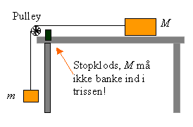
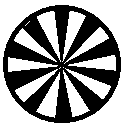

Formålet er at bestemme den dynamiske gnidningskoefficient for en klods, der
1: trækkes hen over et bord.
2: trækkes op ad et skråplan.
Til forsøget bruges en klods, et lod, en LabPro med Timer (fototage + trisse) og programmet Datalyse. Timeren består af en lysvej og en trisse med 10 eger. LabPro tilsluttet en PC. I menuen for LabPro vælges Timer. Når egerne bryder lysstrålen, registrerer programmet tidspunktet. Efter endt måling tegnes en (t, s)-graf tegnes på skærmen. Hastigheden i bevægelsen fås ved differentiation, og accelerationen bestemmes vha. lineær regression.
| Forsøgsopstilling:
 |
 Trisse: |
Først udføres forsøg, hvor et lod m trækker en klods M. Der laves ekstra forsøg med belastning af klodsen og af loddet. Bevægelsen startes ved at stramme snoren op og give slip på loddet. Gives der slip på klodsen, opstå der svingninger i snoren!
Husk at veje m og M
Gem data efterhånden som forsøgene laves!
Så klodses bordet op i den ene ende, så klodsen trækkes opad:
Der laves igen forsøg med ekstra belastninger af M og eventuelt med forskellige vinkler af bordet.
Husk at veje m og M og måle vinklen (find selv en metode).
Eksempler på (t, s)-grafer og (t, v)-grafer.
Opskriv udtryk for den resulterende kraft på systemet og udled vha. Newtons 2. lov et udtryk for gnidningskoefficienten m.
Udregn m for alle forsøg. Find middelværdi og spredning på m. Undlad dog afvigende målinger i disse beregninger. Husk, at begrunde!